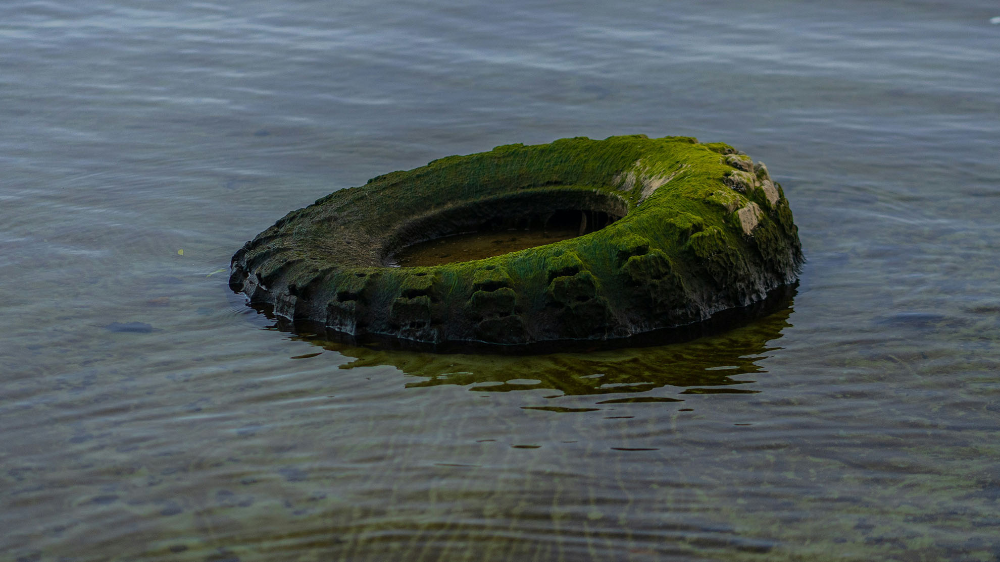

<div>
    <article class="information-conference">
        <header class="information-conference__image">
            
        </header>
    
        <section class="information-conference__article container">
            <h1>
                Jornades d’Economia Circular: Construint el Futur Sostenible
            </h1>
            <p>
                Les jornades sobre economia circular tenen com a objectiu principal sensibilitzar i formar professionals, 
                estudiants i ciutadania en general sobre la importància de transformar el model econòmic lineal actual. 
                Aquest model, basat en produir, consumir i llençar, s’ha mostrat insostenible davant els reptes ambientals 
                i econòmics del segle XXI. L’economia circular proposa una alternativa més eficient i respectuosa amb el 
                medi ambient, que prioritza la reutilització, la reparació i el reciclatge dels recursos.
            </p>
            <p>
                Durant les jornades es duran a terme diferents conferències, tallers i taules rodones amb la participació 
                d’experts en sostenibilitat, representants d’empreses, administracions públiques i organitzacions del tercer 
                sector. S’hi tractaran temes com la innovació en el disseny de productes, la gestió dels residus, l’economia 
                verda i els nous models de consum responsable. A més, es presentaran casos d’èxit locals i internacionals 
                que ja estan aplicant estratègies circulars amb resultats positius.
            </p>
            <blockquote>
                <p>
                    <em>
                        “L’economia circular no és només una opció, és la clau per construir un futur sostenible i més just 
                        per a tothom.”
                    </em>
                    <br>
                    — Fragment de la conferència inaugural de les jornades
                </p>
            </blockquote>
            
            <p>
                Aquest esdeveniment també vol fomentar la col·laboració entre sectors per impulsar iniciatives conjuntes que 
                promoguin una economia més resilient. Les jornades esdevenen així un espai de trobada i intercanvi de coneixements, 
                on es poden establir sinergies i aliances estratègiques. Les activitats estan pensades tant per a un públic 
                tècnic com per al públic general, amb l’objectiu d’arribar al màxim de persones possible.
            </p>
            <p>
                Finalment, les jornades volen contribuir a la conscienciació col·lectiva sobre la necessitat de repensar la 
                manera com produïm i consumim. La transició cap a una economia circular no només és possible, sinó imprescindible 
                si volem garantir el benestar de les generacions futures. A través d’aquestes iniciatives formatives i participatives, 
                es pretén avançar cap a una societat més sostenible, justa i compromesa amb el planeta.
            </p>
        </section>
        
    </article>
</div>
